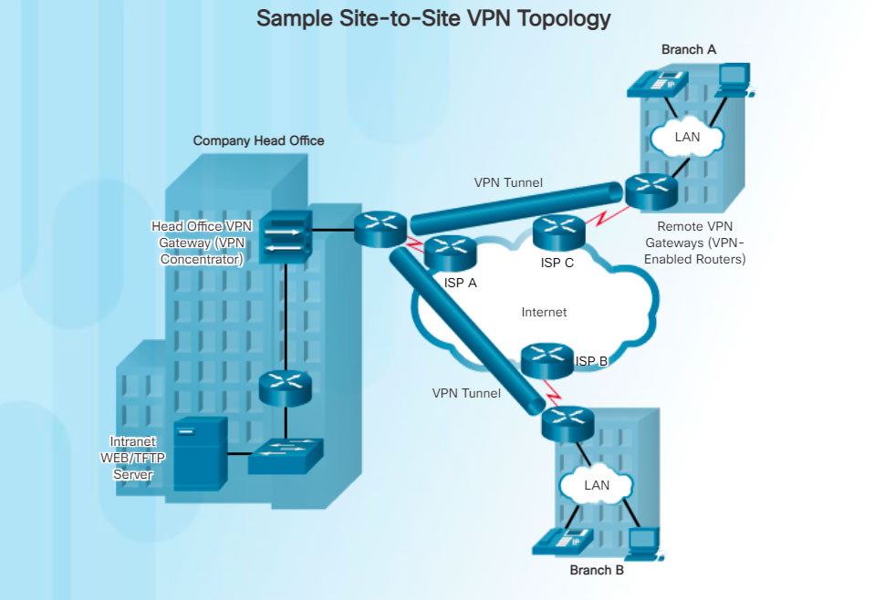
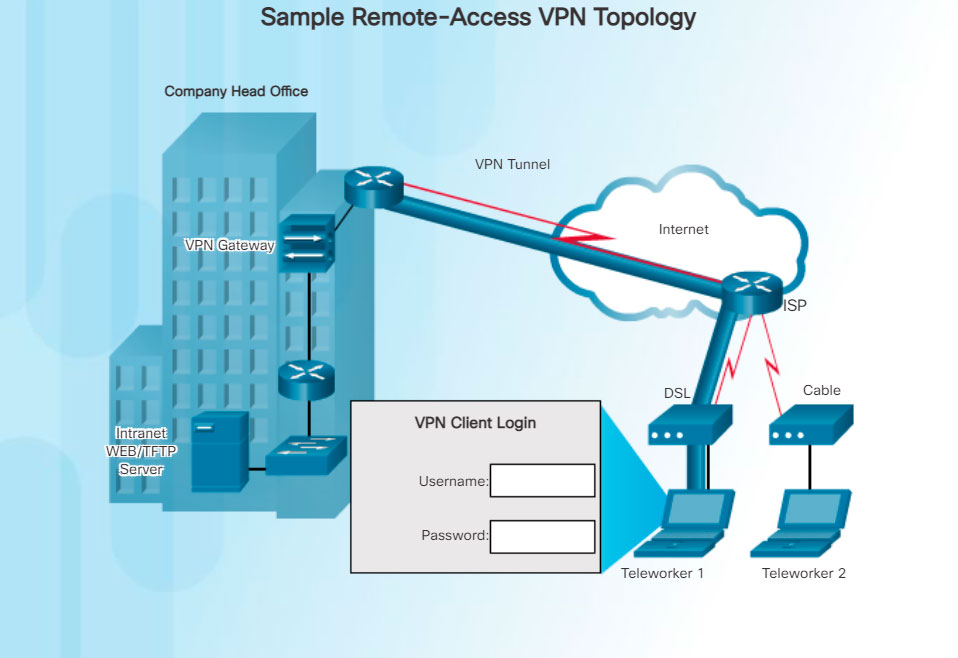

Security risks are incurred when a teleworker or a remote office worker uses a broadband service to access the corporate WAN over the Internet. To address security concerns, broadband services provide capabilities for using VPN connections to a network device that accepts VPN connections, which is typically located at the corporate site.
A VPN is an encrypted connection between private networks over a public network, such as the Internet. Instead of using a dedicated Layer 2 connection, such as a leased line, a VPN uses virtual connections called VPN tunnels, which are routed through the Internet from the private network of the company to the remote site or employee host.
There are several benefits to using VPN:
- Cost savings - VPNs enable organizations to use the global Internet to connect remote offices, and to connect remote users to the main corporate site. This eliminates expensive, dedicated WAN links and modem banks.
- Security - VPNs provide the highest level of security by using advanced encryption and authentication protocols that protect data from unauthorized access.
- Scalability - Because VPNs use the Internet infrastructure within ISPs and devices, it is easy to add new users. Corporations are able to add large amounts of capacity without adding significant infrastructure.
- Compatibility with broadband technology - VPN technology is supported by broadband service providers such as DSL and cable. VPNs allow mobile workers and telecommuters to take advantage of their home high-speed Internet service to access their corporate networks. Business-grade, high-speed broadband connections can also provide a cost-effective solution for connecting remote offices.
There are two types of VPN access:
- Site-to-site VPNs - Site-to-site VPNs connect entire networks to each other; for example, they can connect a branch office network to a company headquarters network, as shown in Figure 1. Each site is equipped with a VPN gateway, such as a router, firewall, VPN concentrator, or security appliance. In the figure, a remote branch office uses a site-to-site-VPN to connect with the corporate head office.
- Remote-access VPNs - Remote-access VPNs enable individual hosts, such as telecommuters, mobile users, and extranet consumers, to access a company network securely over the Internet. Each host (Teleworker 1 and Teleworker 2) typically has VPN client software loaded or uses a web-based client, as shown in Figure 2. 